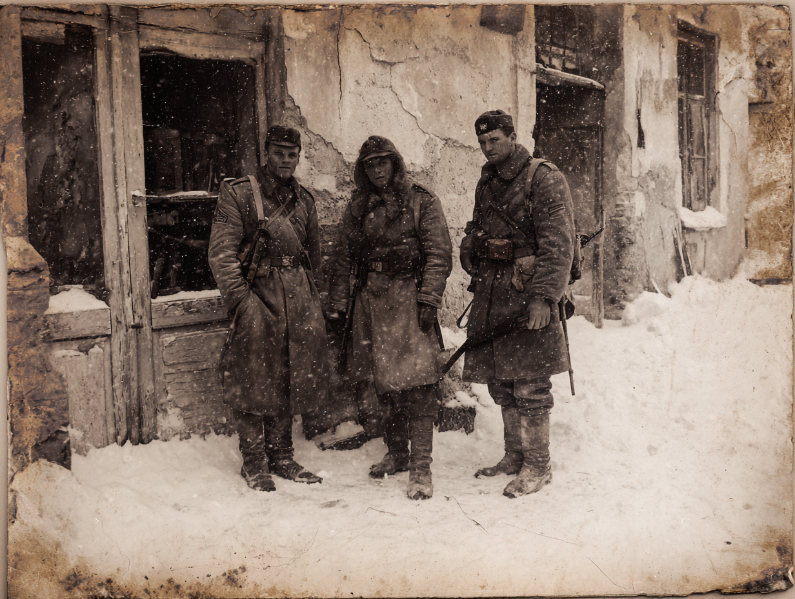

SL-Guide: Unit D-47, SecureStore Leesburg, VA
Volkov köpte ENDAST Harriets dagbok på auktionen (oktober 2024). Han frågade Emily om "papers and notebooks" - inte föremål. Han missade förrådet helt.
Spelarna får nu: Type-VII fragment, Lundeens lapp om "Tre delar", Frankfurt Clinic-kopplingen, Leningrad-foto, Harriets anteckningsbok med drömmar om "tre män i snö".
VOLKOV_WATCH ALERT:
Alias match: "V. Petrov"
Transaction: Estate sale item purchase
Item: Personal diary (1940)
Estate: Harriet Johnson
Date logged: October 2024
Source: Lovettsville Historical Society Q1 2025 donor report
Spelarna frågar sig: Vem fan är Harriet Johnson?
Vad de hittar (verklig info):
Fiktivt tillskott:
Hitta henne: Facebook, LinkedIn (lärare), eller via Lovettsville Historical Society
Emily: "Herregud, det finns SÅ mycket kvar. Jag sålde det jag kunde men det mesta av farmors saker är fortfarande i hennes förråd. Jag har betalat 85 dollar i månaden i över ett år bara för att jag inte orkar gå igenom alltihop."
Om de ber om tillträde: "Ni får gärna titta om ni vill? Här, jag skickar er portkoden och enhetsnumret. Det är SecureStore i Leesburg, Unit D-47."
SecureStore Self Storage - Industriområde, Leesburg, VA
Unit D-47: Andra våningen, längst bort. Rullgardinsdörr (blekgrön metall). Kod: 4782#
När de öppnar: SKRAPAR metalldörren upp. Dammoln yr.
Första intrycket: Fullproppat. Kaos. Kartonger staplade till taket. Möbler med lakan över. Julpynt. En hel människas liv i 6x3 meter.
Låt spelarna utforska fritt. 99% är skräp:
När de säger: "Vi letar efter något från 1940" eller "Något kopplat till Lundeen"
Då guidar du dem mot träkistorna längst in.
Skylt på kistorna (svart tejp, kritstoft): "Farfars saker - Rör ej! / Harriet 1952"
SL-anteckning: Vierecks visitkort bekräftar kopplingen. Allt annat är vardagliga saker från en senator 1940.
Liten svart anteckningsbok. "H.J. 1940" på framsidan. ~40 sidor. Harriets snabba handstil.
15 september 1940: "FBI här igen. Frågade om tysken. Jag sa att jag aldrig såg honom tydligt. Det är sant. Men jag hörde honom - den accenten. Och jag såg väskan han lämnade. Metall. Konstigt hummande ljud. Ernest rörde vid den och hans hand skakade i en timme efteråt."
22 september 1940: "Mrs. Lundeen kom till kontoret. Letade efter något. Jag gav henne kuvertet Ernest lämnade till mig 'om något händer'. Sa åt henne att bränna det. Hon gjorde det inte."
3 oktober 1940: "Märklig dröm igen. Det blå ljuset. De tre männen som står i snö. En av dem tittade på mig och jag vaknade skrikande."
27 oktober 1940: "Dr. Reinhardt ringde igen idag. Frågade om Ernest någonsin nämnde 'ryska kontakter' eller 'Leningrad'. Vad pratar han om? Vad vet han?"
Detta etablerar: Tysk man lämnade metalväska, väskan hummade/vibrerade, fysisk effekt på Lundeen, Harriets drömmar om "tre män i snö", Frankfurt Clinic-kopplingen via Dr. Reinhardt
Den här kistan innehåller minst. Mest luft och bomull för packing. Överst ligger ett brev.

Fotot från metallboxen - "Leningrad contact - K. referens" (klicka för full storlek)
SL-anteckning: Detta är första direkta kopplingen till Leningrad. Spelarna har ingen aning vad "K" betyder än (det är Kalenko).
Vid Unnatural-check (10+): Detta är inte naturligt material. Det känns fel på ett sätt som får nackhåren att resa sig. Det borde inte existera.
SL-anteckning: Detta är ett fragment av Type-VII-kristallen från Trip 19. Överlevde kraschen, överlevde inbrottet 1940, gömdes av Norma.
SL-anteckning: "R" är sannolikt Reinhardt. Detta visar att Lundeen fick Type-VII redan 1939, långt före Trip 19.
Framsida:
Baksida (penna, Lundeens handstil): "Kalenko - 1942"
SL-anteckning: Detta är nyckeln. Frankfurt Clinic + Kalenko + 1942 = Leningrad-kopplingen. Men spelarna förstår inte det än.
Om någon kan tyska: Fragmentariska meningar som "...resonansfrekvens måste kalibreras...", "...farligt vid direkt beröring...", "...tre enheter nödvändiga för full aktivering..."
SL-anteckning: Teknisk dokumentation för Type-VII. Visar att det fanns FLERA enheter.
SL-anteckning: Detta är Lundeens sista varning. Han visste att det fanns tre kristaller/enheter. Han dog på väg att leverera VII. VIII och IX är fortfarande där ute.
Förberedda dokument att ge spelarna:
Naturliga frågor spelarna bör ställa:
När de senare träffar Magda kommer hon kunna koppla ihop:
Om de frågar om Volkov varit här:
Emily: "Ta vad ni vill. Om det hjälper er förstå vad som hände med senatorn så är farmor säkert glad."
Om någon håller det för länge (10+ minuter):